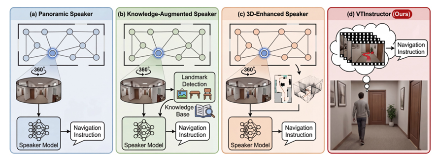

|
Haolin Yang (杨昊霖) Hi there! I am a final-year undergraduate at Peking University, majoring in Intelligence Science and Technology at the School of Intelligence Science and Technology, where I am fortunate to be advised by Prof. Hao Dong and work closely with my senior collaborator Yuxing Long. My research centers on embodied intelligence and multimodal comprehension, with a focus on vision-language navigation and spatial intelligence. I am currently interested in multimodal large language models for developer productivity, particularly LLM-based coding agents. |
{kind=link}
News2026-07 Two papers got accepted to ACMMM 2026! 2026-04 Two papers submitted to ACMMM 2026. 2026-01 NavSpace: How Navigation Agents Follow Spatial Intelligence Instructions Got Accepted to ICRA 2026! 2025-09 Submitted NavSpace: How Navigation Agents Follow Spatial Intelligence Instructions to ICRA 2026. |
|
 |
VTInstructor: Visual Trajectory Prompting for Navigation Instruction Generation in Continuous Environments
Haolin Yang*, Yuxing Long*, Zihan Yang*, Hao Dong† ACM International Conference on Multimedia (ACMMM) 2026 Paper / Project / Code The first and SoTA VLN instruction generation framework for continuous environments. |

|
Scaling Manual-Grounded Appliance Manipulation with Data Synthesis and Unified Planning
Yuxing Long, Lei Kang, Ziyan Yu, Yuzheng Gao, Bin Cheng, Jiyao Zhang, Xiaoqi Li, Haolin Yang, Dongjiang Li, Hui Shen, Hao Dong† ACM International Conference on Multimedia (ACMMM) 2026 Paper / Project / Code |

|
NavSpace: How Navigation Agents Follow Spatial Intelligence Instructions
Haolin Yang*, Yuxing Long*, Zhuoyuan Yu, Zihan Yang, Minghan Wang, Jiapeng Xu, Yihan Wang, Ziyan Yu, Wenzhe Cai, Lei Kang, Hao Dong† International Conference on Robotics and Automation (ICRA) 2026 Paper / Project / Code / 北京日报 The first benchmark and model for spatial intelligence in Embodied Navigation. |
Education |
|
Peking University
B.S. in Intelligence Science and Technology, School of Intelligence Science and Technology 2023.9 – 2027.7 (Expected) |
Experience |
|
Microsoft Research Asia (MSRA)
Research Intern |
|

|
Zhiyuan Robotics Co., Ltd.
Research Intern · PKU Joint Laboratory |

|
Zhipu AI (Z.ai)
AI Application Engineer Intern |
Honors & Awards
2024-25 Huawei Scholarship |
LanguageTOEFL iBT: 114 (Reading: 30, Listening: 30, Speaking: 27, Writing: 27) |
Miscellaneous
|
|
"Man is only a reed, the weakest in nature, but he is a thinking reed. All our dignity consists, then, in thought."
|
|
Website template from Jon Barron. |